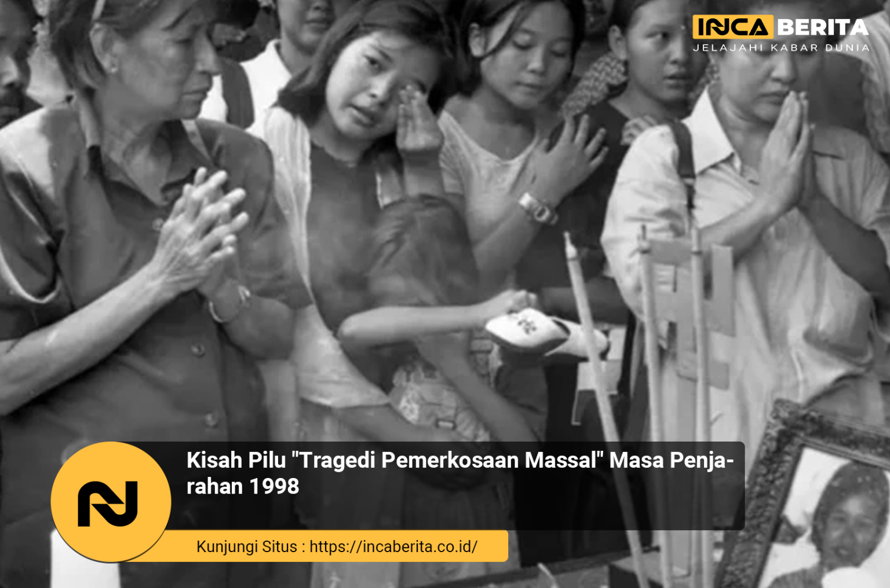

welcome to my website
Jokowi Sakit Kulit? Fakta di Balik Kabar Alergi Sang Presiden
Sebuah video singkat dari siaran langsung acara resmi di Jakarta memperlihatkan Presiden Joko Widodo tampak menggaruk-garuk bagian leher dan lengan kanan saat menghadiri peresmian infrastruktur nasional. Beberapa potongan
foto bahkan menyorot bagian kulit beliau yang terlihat memerah dan sedikit mengelupas.
kategori berita : sosial

Luka yang Tak Terucapkan: Tragedi Pemerkosaan Massal 1998
Kerusuhan besar meledak di Jakarta dan kota-kota besar lainnya pada 13–15 Mei 1998. Awalnya dipicu krisis moneter, harga bahan pokok melonjak, dan ketidakpuasan publik terhadap pemerintahan Soeharto memuncak.
Tapi di tengah kekacauan itu, sesuatu yang jauh lebih keji terjadi: pemerkosaan sistematis terhadap perempuan Tionghoa.
Data resmi sangat terbatas, bahkan sempat dibantah. Tapi berbagai laporan independen, termasuk dari Tim Gabungan Pencari Fakta (TGPF), memperkirakan setidaknya 85 kasus kekerasan seksual terjadi—sebagian besar dalam bentuk pemerkosaan massal, bahkan disertai penyiksaan..
kategori berita : asusila

Putin Siap Bantu Indonesia Kembangkan Nuklir
Kembangkan Nuklir, Apa Dampaknya? Pernyataan mengejutkan dari Presiden Rusia ini sontak menjadi perhatian dunia. Dengan potensi kerja sama teknologi nuklir, Indonesia berada di ambang lompatan besar dalam sektor energi. Di saat banyak negara berkembang mencari alternatif energi yang bersih dan efisien, Rusia menawarkan bantuannya secara langsung. Dalam konteks ini,
perhatian dunia pun tertuju pada kesiapan dan strategi Indonesia dalam menanggapi tawaran tersebut.
kategori berita : politik
AS Serangan Iran: Memahami Dampak dan Latar Belakangnya
Ketegangan antara Amerika Serikat dan Iran telah menjadi isu global yang berulang selama beberapa dekade. Namun, saat serangan terbaru dari AS terjadi terhadap Iran, dunia kembali menyorot konflik ini dengan perhatian serius. Artikel ini mencoba menjelaskan latar belakang, motif,
serta dampak dari AS Serangan Iran tersebut dengan bahasa yang ringan namun tetap informatif.
kategori berita : konflik
Erupsi Gunung Semeru, Semburkan Abu 1.2km. WARGA SIAGA!
Data dari Pos Pengamatan Gunung Api (PPGA) di Sawur menunjukkan bahwa Erupsi pertama terjadi pukul 00.22 WIB. Letusan itu memuntahkan kolom abu setinggi 400 meter ke arah utara dengan intensitas sedang.
Pukul 05.28 WIB, erupsi kedua terjadi. Kolom abu tebal setinggi 500 meter kembali menyembur ke arah utara. Tiga menit kemudian, pukul 05.31 WIB, erupsi ketiga terjadi. Letusan ini lebih besar dengan kolom abu setinggi 1.2km.
“Terjadi Erupsi di Semeru pada hari Minggu, 22 Juni 2025 pukul 05.31 WIB. Tinggi kolom abu teramati 1.2km di atas puncak,” ujar Liswanto, petugas PPGA Semeru.
kategori berita : bencana alam